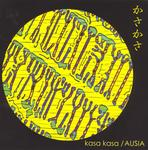

| Artist: | Ausia |
| Title: | Kasa Kasa |
| Label: | Poseidon PRF-013/Musea FGBG 4497.AR |
| Length(s): | 55 minutes |
| Year(s) of release: | 2003 |
| Month of review: | [01/2004] |
| 1) | Vision That You Give | 8.38 |
| 2) | Night Dance | 2.45 |
| 3) | When That I Was A Little Tiny Boy | 2.25 |
| 4) | Indian Rain | 7.06 |
| 5) | Housewarming In Alaska | 7.12 |
| 6) | Mother Goose | 3.29 |
| 7) | Short Summer In Valhalla | 6.53 |
| 8) | Lost On The Way Home | 4.44 |
| 9) | Kasa Kasa | 12.01 |
The next two tracks are quite a bit shorter, but the first of them, Night Dance, is not very different from the previous track. It seems the strumming acoustic guitar plays a stronger role, while the violin is more moody. The guitar opens on When That I Was A Little Tiny Boy, while the flute and violin are more supportive. There are also vocals on this one, a bit in the vein of Jethro Tull, with a folky flair.
It shows on Indian Rain as on other tracks, that the production is very intimate. Seems to me the music has more or less been recorded live and little has been done. The sound is good, but to my ears the instruments have been nicely separated, allowing you to easily focus on one or the other. This is a longer thematic track, in the vein of the opener. The construction has the same Flairck like elements as the opener. There is something 'classical' about them, but also folk elements are included.
Housewarming In Alaska is a sad track (for some reason) rather careful in execution. The acoustic guitar plays repetitive patterns, while violin and flute (or whatever it is) play in parallel without paying too much attention to each other. There is something very much like the sound of birds in the forest about this.
Mother Goose is a Tull cover, something which becomes clearly noticeable after the vocals started. The vocal melody is so strongly Tull like.
A song like Short Summer In Valhalla brings us little new to what has gone on before, although the rendition here is quite forceful. Lost On The Way Home lacks in speed, but makes up in sadness for it. This is a melancholic one using the same palette, although a bit heavier on the violin and less on the flutes. It has to be said that the songs do tend to sound alike, because of the few and dominating instruments, and the rather similar styles of playing.
Kasa Kasa is the final track, and by far the longest. It displays all the skills of the players in the same they have done before, but sounding on the whole a bit more improvised and ehm danceable or something. The violin wails, the flutes meander, a bit too hastily I might add.